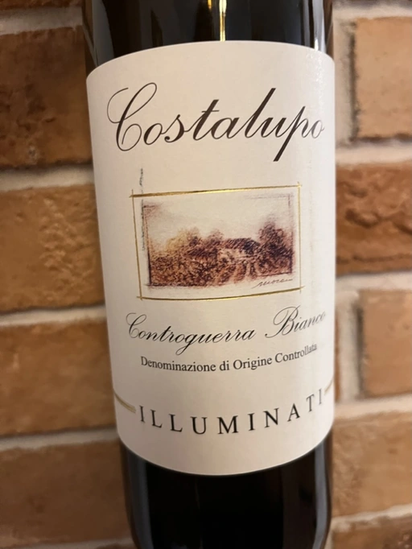

- Type
- White Still, Dry
- Producer
- Illuminati
- Vintage
- 2021
- Location
- Italy, Controguerra DOC
- Grapes
- Chardonnay, Trebbiano, Passerina
- Alcohol
- 12.5
- Sugar
- NA
- Price
- 222 UAH
- Cellar
- N/A
Ratings
2022-06-28 - 6.50
According to the producer site, Costalupo is a blend of 3 grapes - Chardonnay, Trebbiano and Passerina. I have no reasons to doubt their technical sheet, so it makes it my first Passerina. It’s fruity in the nose, with hints of white flowers like acacia and honeysuckle, and honey or smokey notes. Bland on the palate, with medium acidity, which makes it rather a table wine that you consume and move to the other bottle hardly remembering anything.